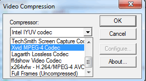

Creating a video with OpenCV
Goal
Whenever you work with video feeds you may eventually want to save your image processing result in a form of a new video file. For simple video outputs you can use the OpenCV built-in cv::VideoWriter class, designed for this.
- How to create a video file with OpenCV
- What type of video files you can create with OpenCV
- How to extract a given color channel from a video
As a simple demonstration I’ll just extract one of the BGR color channels of an input video file into a new video. You can control the flow of the application from its console line arguments:
- The first argument points to the video file to work on
- The second argument may be one of the characters: R G B. This will specify which of the channels to extract.
- The last argument is the character Y (Yes) or N (No). If this is no, the codec used for the input video file will be the same as for the output. Otherwise, a window will pop up and allow you to select yourself the codec to use.
For example, a valid command line would look like:
video-write.exe video/Megamind.avi R Y
The source code
You may also find the source code and these video file in the samples/cpp/tutorial_code/videoio/video-write/ folder of the OpenCV source library or download it from here.
#include <iostream> // for standard I/O #include <string> // for strings #include <opencv2/core.hpp> // Basic OpenCV structures (cv::Mat) #include <opencv2/videoio.hpp> // Video write using namespace std; using namespace cv; static void help() { cout << "------------------------------------------------------------------------------" << endl << "This program shows how to write video files." << endl << "You can extract the R or G or B color channel of the input video." << endl << "Usage:" << endl << "./video-write <input_video_name> [ R | G | B] [Y | N]" << endl << "------------------------------------------------------------------------------" << endl << endl; } int main(int argc, char *argv[]) { help(); if (argc != 4) { cout << "Not enough parameters" << endl; return -1; } const string source = argv[1]; // the source file name const bool askOutputType = argv[3][0] =='Y'; // If false it will use the inputs codec type VideoCapture inputVideo(source); // Open input if (!inputVideo.isOpened()) { cout << "Could not open the input video: " << source << endl; return -1; } string::size_type pAt = source.find_last_of('.'); // Find extension point const string NAME = source.substr(0, pAt) + argv[2][0] + ".avi"; // Form the new name with container int ex = static_cast<int>(inputVideo.get(CAP_PROP_FOURCC)); // Get Codec Type- Int form // Transform from int to char via Bitwise operators char EXT[] = {(char)(ex & 0XFF) , (char)((ex & 0XFF00) >> 8),(char)((ex & 0XFF0000) >> 16),(char)((ex & 0XFF000000) >> 24), 0}; Size S = Size((int) inputVideo.get(CAP_PROP_FRAME_WIDTH), // Acquire input size (int) inputVideo.get(CAP_PROP_FRAME_HEIGHT)); VideoWriter outputVideo; // Open the output if (askOutputType) outputVideo.open(NAME, ex=-1, inputVideo.get(CAP_PROP_FPS), S, true); else outputVideo.open(NAME, ex, inputVideo.get(CAP_PROP_FPS), S, true); if (!outputVideo.isOpened()) { cout << "Could not open the output video for write: " << source << endl; return -1; } cout << "Input frame resolution: Width=" << S.width << " Height=" << S.height << " of nr#: " << inputVideo.get(CAP_PROP_FRAME_COUNT) << endl; cout << "Input codec type: " << EXT << endl; int channel = 2; // Select the channel to save switch(argv[2][0]) { case 'R' : channel = 2; break; case 'G' : channel = 1; break; case 'B' : channel = 0; break; } Mat src, res; vector<Mat> spl; for(;;) //Show the image captured in the window and repeat { inputVideo >> src; // read if (src.empty()) break; // check if at end split(src, spl); // process - extract only the correct channel for (int i =0; i < 3; ++i) if (i != channel) spl[i] = Mat::zeros(S, spl[0].type()); merge(spl, res); //outputVideo.write(res); //save or outputVideo << res; } cout << "Finished writing" << endl; return 0; }
The structure of a video
For start, you should have an idea of just how a video file looks. Every video file in itself is a container. The type of the container is expressed in the files extension (for example avi, mov or mkv). This contains multiple elements like: video feeds, audio feeds or other tracks (like for example subtitles). How these feeds are stored is determined by the codec used for each one of them. In case of the audio tracks commonly used codecs are mp3 or aac. For the video files the list is somehow longer and includes names such as XVID, DIVX, H264 or LAGS (Lagarith Lossless Codec). The full list of codecs you may use on a system depends on just what one you have installed.

As you can see things can get really complicated with videos. However, OpenCV is mainly a computer vision library, not a video stream, codec and write one. Therefore, the developers tried to keep this part as simple as possible. Due to this OpenCV for video containers supports only the avi extension, its first version. A direct limitation of this is that you cannot save a video file larger than 2 GB. Furthermore you can only create and expand a single video track inside the container. No audio or other track editing support here. Nevertheless, any video codec present on your system might work. If you encounter some of these limitations you will need to look into more specialized video writing libraries such as FFMpeg or codecs as HuffYUV, CorePNG and LCL. As an alternative, create the video track with OpenCV and expand it with sound tracks or convert it to other formats by using video manipulation programs such as VirtualDub or AviSynth.
The class
The content written here builds on the assumption you already read the Video Input with OpenCV and similarity measurement tutorial and you know how to read video files. To create a video file you just need to create an instance of the cv::VideoWriter class. You can specify its properties either via parameters in the constructor or later on via the cv::VideoWriter::open function. Either way, the parameters are the same: 1. The name of the output that contains the container type in its extension. At the moment only avi is supported. We construct this from the input file, add to this the name of the channel to use, and finish it off with the container extension.
const string source = argv[1]; // the source file name string::size_type pAt = source.find_last_of('.'); // Find extension point const string NAME = source.substr(0, pAt) + argv[2][0] + ".avi"; // Form the new name with container
The codec to use for the video track. Now all the video codecs have a unique short name of maximum four characters. Hence, the XVID, DIVX or H264 names. This is called a four character code. You may also ask this from an input video by using its get function. Because the get function is a general function it always returns double values. A double value is stored on 64 bits. Four characters are four bytes, meaning 32 bits. These four characters are coded in the lower 32 bits of the double. A simple way to throw away the upper 32 bits would be to just convert this value to int :
VideoCapture inputVideo(source); // Open input int ex = static_cast<int>(inputVideo.get(CAP_PROP_FOURCC)); // Get Codec Type- Int form
OpenCV internally works with this integer type and expect this as its second parameter. Now to convert from the integer form to string we may use two methods: a bitwise operator and a union method. The first one extracting from an int the characters looks like (an “and” operation, some shifting and adding a 0 at the end to close the string):
char EXT[] = {ex & 0XFF , (ex & 0XFF00) >> 8,(ex & 0XFF0000) >> 16,(ex & 0XFF000000) >> 24, 0};
You can do the same thing with the union as:
union { int v; char c[5];} uEx ; uEx.v = ex; // From Int to char via union uEx.c[4]='\0';
The advantage of this is that the conversion is done automatically after assigning, while for the bitwise operator you need to do the operations whenever you change the codec type. In case you know the codecs four character code beforehand, you can use the CV_FOURCC macro to build the integer:
CV_FOURCC('P','I','M,'1') // this is an MPEG1 codec from the characters to integer
If you pass for this argument minus one than a window will pop up at runtime that contains all the codec installed on your system and ask you to select the one to use:
The frame per second for the output video. Again, here I keep the input videos frame per second by using the get function.
The size of the frames for the output video. Here too I keep the input videos frame size per second by using the get function.
The final argument is an optional one. By default is true and says that the output will be a colorful one (so for write you will send three channel images). To create a gray scale video pass a false parameter here.
Here it is, how I use it in the sample:
VideoWriter outputVideo; Size S = Size((int) inputVideo.get(CAP_PROP_FRAME_WIDTH), //Acquire input size (int) inputVideo.get(CAP_PROP_FRAME_HEIGHT)); outputVideo.open(NAME , ex, inputVideo.get(CAP_PROP_FPS),S, true);
Afterwards, you use the cv::VideoWriter::isOpened() function to find out if the open operation succeeded or not. The video file automatically closes when the VideoWriter object is destroyed. After you open the object with success you can send the frames of the video in a sequential order by using the cv::VideoWriter::write function of the class. Alternatively, you can use its overloaded operator << :
outputVideo.write(res); //or outputVideo << res;
Extracting a color channel from an BGR image means to set to zero the BGR values of the other channels. You can either do this with image scanning operations or by using the split and merge operations. You first split the channels up into different images, set the other channels to zero images of the same size and type and finally merge them back:
split(src, spl); // process - extract only the correct channel for( int i =0; i < 3; ++i) if (i != channel) spl[i] = Mat::zeros(S, spl[0].type()); merge(spl, res);
Put all this together and you’ll get the upper source code, whose runtime result will show something around the idea:
You may observe a runtime instance of this on the YouTube here.